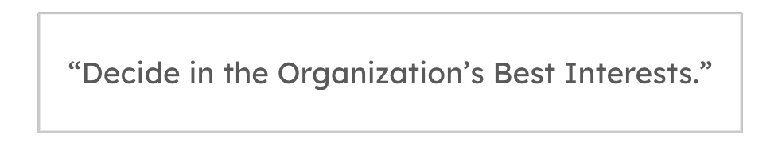
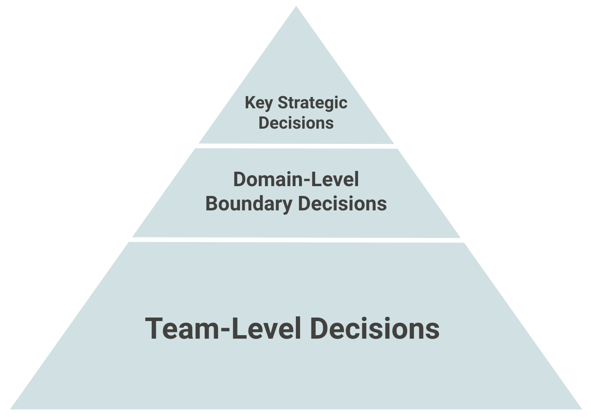

Architecture Activities Platform

IN THIS SECTION, YOU WILL: Understand what activities you can do as a part of architecture practice and get tips on creating pragmatic operating models for an architecture practice.
KEY POINTS:
- The Architecture Activities Platform is a system of processes and agreements enabling architects to do everything architecture typically does, leveraging Data and People Foundations to create a data-informed, organization-wide impact.
- Examples of activities include: supporting teams in their daily work; tracking tech debt, defining tech debt reduction programs; performing technical due diligence; standardizing processes and documentation; defining cloud, data, and platform strategies.
Each organization will have different architectural needs and contexts. When forming architecture functions, I use as a starting point these two pieces of advice from Gregor Hohpe:
- “Your architecture team’s job is to solve your biggest problems. The best setup is the one that allows it to accomplish that.”
- “Your organization has to earn its way to an effective architecture function. You can’t just plug some architects into the current mess and expect it to solve all your problems.”
 Figure 1: The structure of Grounded Architecture: Architecture Activities Platform.
Figure 1: The structure of Grounded Architecture: Architecture Activities Platform.
Considering the previous two points from Gregor Hohpe, I approach defining an architecture practice with a mindset that there is no one-size-fits-all approach. You must find your own activities and operating models to enable architecture to solve the most critical problems.
No matter which operating models you select, you must develop explicit agreements and “rules of engagement” with key stakeholders to create a sustainable and practical architecture function.
The Architecture Activities Platform (Figure 1) is a set of processes and agreements that allows architects to do everything architecture practice typically does, leveraging Data and People Foundations to develop a data-informed, organization-wide impact. In all these activities, Data and People Foundations provide a basis for data-informed decision-making well embedded in the organization.
Examples of Architecture Activities
To better understand what I mean by an Architecture Activities Platform, here are some examples of activities I have been performing with architects:
- Designing mechanisms for teams to make better decisions. This activity includes creating global decision-support mechanisms, such as advisory forums, formal design authority (for compliance-sensitive projects), and team-specific mechanisms, such as escalation paths in case of decision conflicts (e.g., teams cannot align on a common messaging middleware).
- Supporting teams in their daily work. Being part of key team activities, aligning architectural work with team rituals to provide timely support, and supporting the team in all crucial phases of their work (e.g., reviewing architecture proposals early before the project or sprint starts).
- Supporting planned new initiatives and projects. Ensuring alignment between projects that require multi-team collaboration.
- Supporting teams in dealing with the legacy landscape. Providing data and knowledge regarding legacy landscape, identifying hotspots (e.g., frequently changed, low-quality untested pieces of legacy code), defining scenarios and roadmap for legacy modernization.
- Tracking tech debt, defining tech debt reduction programs. Defining a centrally aligned backlog of technology depth, defining programs for its reduction, and integration in planning processes.
- Performing SWOT and other analyses of platforms and systems. Doing deep dives to better understand some areas of the technology landscape and create plans and roadmaps for improvement.
- Standardizing of processes and documentation. Defining standard templates for documents such as Architectural Decision Records (ADRs), Technical Design Reviews (TDRs), or common diagrams.
- Supporting merger and acquisitions (M&A) activities with expertise and analyses. Support analyses, recommendations, and integration planning regarding mergers and acquisitions.
- Defining key technology strategies. Examples include Cloud, Data, and Platform strategies.
- Defining vision and direction of technology, frequently collaborating with Engineering Leaders. Working with managers to create a sustainable organizational setting aligned with technology strategies.
Operating Model
While exact activities and their scope will depend on an organization setting and will change over time, I usually followed a common operational model in daily work (Figure 2).

Figure 2: A common operating model I typically use for Grounded Architecture activities.
Inspired by Gregor Hohpe’s strategy-principles-decisions model, I typically used these guidelines:
- Engagement mindset:
- Architects engage with stakeholders and product and project teams in a collaborative and supportive manner.
- Architects aim to empower the teams so that they make most of the decisions.
- Role of architects:
- Bring relevant data to inform decisions leveraging a Data Foundation.
- Define decision boundaries to enable minimal compatibility and strategic alignment (e.g., public cloud provider, golden paths, or tech stack constraints).
- Define fundamental principles to facilitate consistency in decision-making.
- Share and generalize lessons learned via a People Foundation.
- Position of architects:
- Architects spend their time in constant motion between supporting teams’ daily work and working on strategic topics, helping the organization achieve alignment between strategy and implementation.
Another characteristic of this operating model is shifting left the architecture work. I aim to avoid formal bureaucratic approval processes, where architects appear too late and are frequently busy approving trivial decisions. Instead, my goal is to have architects involved early in any of the processes, such as during the planning and preparation stages, where it is possible to make more significant changes.
Architecture Decision Policy
Inspired by the famous Netflix expense policy, I frequently argued that architecture decision policy could be summarized in six words:

What I mean by that is that anyone can make architecture decisions, provided that, in addition to their specific requirements, they also think about the impact of their choices on:
- Overall organizational complexity: Technology is more manageable by limiting tech diversity, size, and dependencies. Limiting technology choices also reduces the attack surface with fewer third-party dependencies and tool ecosystems (build, testing, etc.).
- Ease of moving people between teams (both to get help and help others, get promoted): Do not unnecessarily create exotic islands with few experts in technologies not supported or widely used in the organization. People cannot get help or move across the organization as their expertise may be useless outside the team.
- Ease of training and onboarding of internal and external developers: Using conventional technologies, supported with external learning resources (books, tutorials, StackOverflow) significantly helps find and grow experts.
- Talent density and the possibility of performing at the world-scale level: Building world-scale technology and scaling requires in-depth knowledge and fine-tuning. You cannot achieve it with only a few in-house experts.
- New reorganizations: Would your choices fit with other components from other areas if ownership of components changes (e.g., another team is taking it over)?
- Reducing global duplication of effort and inefficiencies: Are you doing the work others are doing? Can others reuse your work? Can you reuse the work of others?
While it may not always be enough, this simple policy resonates well and encourages people to be more thoughtful when making decisions.
Distributing Decisions, Autonomy, and Alignment
With any operating model, I aim to keep architectural decision-making distributed across the organization and embedded in the development teams. Development teams traditionally have the best insights and most information relevant for making decisions. As noted by Gregor Hohpe, the worst case of organizational decision-making happens when people with relevant information are not allowed to make decisions, while people who lack sufficient information make all decisions. Grounded Architecture aims to make relevant information more readily available to a broader audience and better connect people when making decisions.
While I aim to create a mechanism to give teams autonomy, autonomy does not mean that teams are alone and do not align with anyone, do not get feedback from anyone, and do whatever they want. Teams must complement autonomy with high transparency and proactivity in alignment with other groups.
To give maximal autonomy to the teams while maintaining a minimal level of global alignment and compatibility, I have sometimes implemented the concept of a decision pyramid (Figure 3).
The decision pyramid highlights that development teams should make most decisions. However, several strategic and area-level choices may provide team decision boundaries. For example, selecting the public cloud provider is typically a CTO-level strategic decision. Similarly, engineering leaders in some areas may want to limit some choices, such as the number of programming languages, to more easily train new people, maintain code, and support moves between teams.
 Figure 3: A decision pyramid. The development teams should make most decisions. However, several strategic and area-level decisions may provide decision boundaries for teams (e.g., a public cloud provider).
Rules of Engagement
One of the amusing challenges with setting up an architecture function in an organization is that everyone seems to have a different idea of what “architecture” should entail. It’s like asking people to describe a unicorn: some imagine a mythical, majestic creature, while others picture a sparkly horse with a horn that grants wishes. Good architects can do many things, but this versatility might not always be the most effective way to support the organization.
To be effective, I’ve found it crucial to establish and clearly communicate some “rules of engagement” (ROE). Think of ROE as the office playbook for how architects should operate. In a corporate setting, ROE are the principles that guide how employees and departments interact with each other, clients, and stakeholders. This includes communication protocols, decision-making processes, and conflict-resolution mechanisms. Essentially, ROE sets the stage for what’s expected and what’s not, ensuring everyone plays nicely and fairly.
While you may need to tailor these rules to fit your organization, I found it helpful to set expectations for what the team should be able to do to qualify for the architecture support. Here’s a handy list of expectations for teams seeking architecture support. This also helps clarify what architecture practice isn’t supposed to do:
-
Organizational Awareness and Connections: Teams should know all relevant stakeholders and actively engage with them. This includes product, development, and business stakeholders. Planning should be collaborative across all affected teams, with active working relationships with global functions like QA, DevOps, or Security.
-
Enough Capacity and Skills: Teams should have adequate development capacity with the right skills and seniority to innovate and maintain their products.
-
Strategic Awareness: Teams should understand the organization’s strategic goals, technologies, and other relevant strategies, and know their role within these frameworks.
-
Technical Documentation Literacy: Teams should be capable of creating technical documentation, such as ADRs (Architecture Decision Records) or RFCs (Request for Comments).
-
Technology Standard Awareness: Teams should be familiar with the organization’s technology standards, including golden paths and guidelines for planning, documentation, security, DevOps, and QA processes.
-
Participation and Citizenship: Teams should actively participate in relevant communities (like architecture guilds) and global events (such as architecture summits).
-
Tech Debt Management: Teams must be aware of the technical debt they create and maintain, ideally having a tech debt backlog and a plan for “paying” it back.
Aligning on these rules with the teams helps ensure productive conversations about architectural support. When these conditions are met, architecture practice can help teams level up. When they’re not, architecture support can’t be as effective. However, that doesn’t mean struggling teams are left in the lurch. Architecture can help teams meet these expectations but can’t compensate for their total lack. Teams need to take the initiative and lead. For instance, it’s impractical to have architects working full-time for months with one team as their senior developer. However, architects can coach and help developers grow. Similarly, architects can assist in building relationships with other teams, but the teams themselves need to be active and engaged.
So, set those expectations, establish your rules of engagement, and watch as your architecture function goes from a sparkly unicorn to a well-oiled machine!
Questions to Consider
Your architecture practice job is to solve the biggest problems in your organization. Ask yourself the following questions:
- How can you identify the most critical problems that your architects need to solve in your organization?
- What activities and operating models can you think of that will best enable architecture in your organization to work on these critical problems?
- What does the Architecture Activities Platform look like in your organization, and how could it be improved?
- Which of the provided examples of architectural activities are you currently performing in your organization?
- How does the proposed common operating model align with your current operational practices in your organization? What changes might be necessary to adopt this model?
- In your experience, how early are architects involved in projects and activities? Do you agree with the goal of ‘shifting left’ the architecture work?
- How are architectural decisions distributed across your organization currently? How could this process be improved to ensure the people with the most relevant information make the decisions?
- Reflect on the balance of autonomy and alignment in your organization. How could you better implement a mechanism to give teams autonomy while maintaining alignment and compatibility with global strategy?
- How does the concept of a decision pyramid resonate with you? How is it reflected in your current organization, and how could it be better implemented?
- Which strategic and area-level decisions provide team decision boundaries in your organization? Are there areas where you need more or less limitations to optimize performance?
Structure ← People Foundation |
Structure Transforming Organizations with Grounded Architecture → |